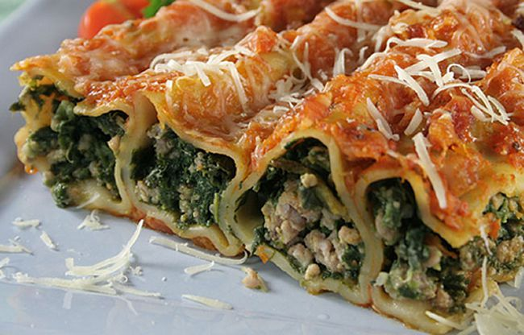

Canelones recipe

Description
Cannelloni (from the Italian cannelloni) are a wide rectangular pasta that is often used in Italian cuisine to make dishes with minced meat, fish (tuna if possible), vegetables, cottage cheese or spinach inside.
Ingredients
- 20 obleas de canelón
- 400 gramos de espinacas
- 1/2 litro de leche
- 100 gramos de queso rallado
- 2 cucharadas de piñones
- 2 cucharadas de pasas
- 1 cucharada de mantequilla
- 1 cucharada de harina
- 1 cebolla
- Aceite de oliva
- Pimienta y sal
Steps
- Hervir las obleas de canelón en abundante agua con sal, pasarlas por agua fría y escurrirlas perfectamente sobre un paño de cocina.
- Rehogar la cebolla picada en un poco de aceite, añadir las espinacas y dejar cocer hasta que hayan absorbido todo el agua. Agregar las pasas y los piñones y rehogarlo todo junto unos minutos.
- Preparar una bechamel con la mantequilla, la harina y la leche, mezclar 6 cucharadas con las espinacas y rellenar los canelones.
- Cubrirlos con el resto de la bechamel, espolvorearlos con el queso rallado y gratinarlos a horno fuerte.